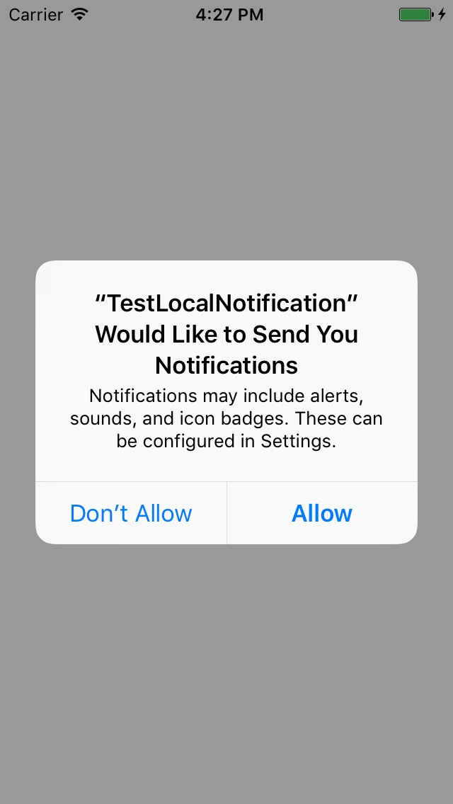
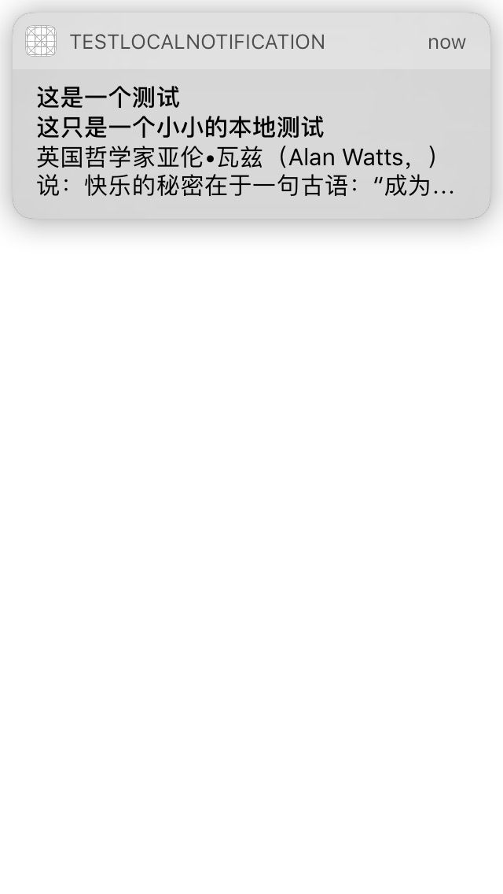
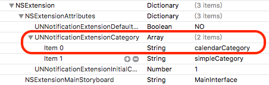
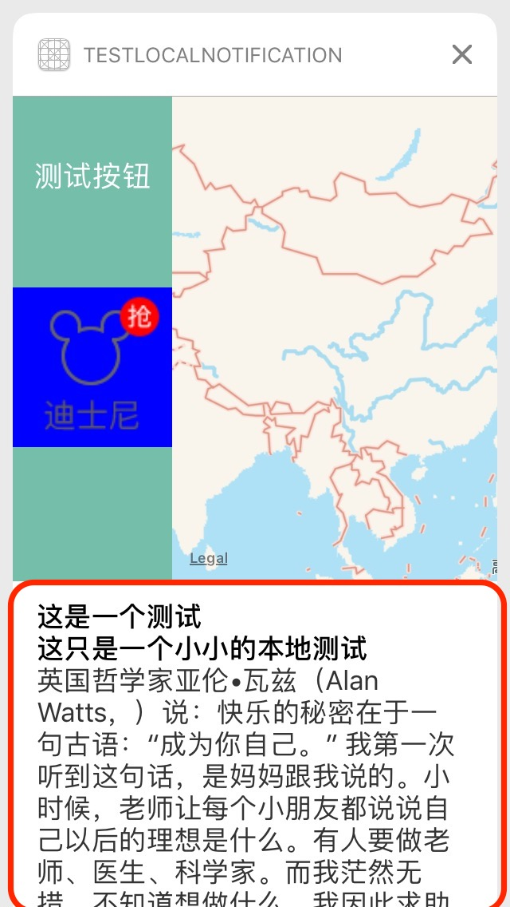
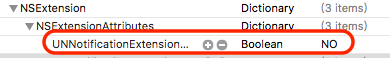

当你手上拿着锤子的时候，全世界都是钉子。迫不及待的想试验一下新的Notification到底长得什么模样。下载最新的Xcode beta,新建工程，开始用swift语言尝试写工程
首先向用户申请打开推送请求
// 向用户请求认证信息
func authorizationNotification() {
UNUserNotificationCenter.current().requestAuthorization(options: [.alert,.sound,.badge]) { (granted, error) in
if granted {
// 用户已经认证了
self.addNotificationHandleInApplication()
}
else {
// 用户拒绝
print("用户拒绝了")
}
}
}当用户验证了之后，开始添加Notification代理，在这之前你需要import UserNotifications,同时继承协议UNUserNotificationCenterDelegate
// 添加notification 代理
func addNotificationHandleInApplication() {
let notification = UNUserNotificationCenter.current()
notification.delegate = self
notification.removeAllPendingNotificationRequests()
registerLocalNotification()
}这个时候你就可以注册一个本地通知了，这里我定义的是一个actionNotification，同时带有附件，先给出生成附件的demo
// 生成简单的NotificationContent
func buildNotificationContent() -> UNMutableNotificationContent! {
let content = UNMutableNotificationContent()
content.title = "这是一个测试"
content.subtitle = "这只是一个小小的本地测试"
content.body = /*"简短的一个描述"*/"英国哲学家亚伦•瓦兹（Alan Watts，）说：快乐的秘密在于一句古语：“成为你自己。” 我第一次听到这句话，是妈妈跟我说的。小时候，老师让每个小朋友都说说自己以后的理想是什么。有人要做老师、医生、科学家。而我茫然无措，不知道想做什么，我因此求助妈妈，问她想让我做什么，她说你做你自己，最好的自己，我就会为你骄傲。然后把亚伦•瓦兹的这句话写到了我的本子上。长大成人以后，每次遇到选择，我都会想到这句话，然后毅然做出选择。直到今天，我都无限感激，父母让我以自己喜欢的方式过日子，我做自己喜欢的职业，嫁给自己喜欢的人，谨慎的做出选择，并且多年以后为自己的选择欣喜。"
let path = Bundle.main.pathForResource("2", ofType: "png")
let attachmentUrl = URL.init(fileURLWithPath: path!)
let attachmentDict = [UNNotificationAttachmentOptionsTypeHintKey:"这是一个附件提示",
UNNotificationAttachmentOptionsThumbnailHiddenKey:(false),
UNNotificationAttachmentOptionsThumbnailClippingRectKey:"{100,100},{100,100}",
UNNotificationAttachmentOptionsThumbnailTimeKey:(5)]
do {
let attachment = try UNNotificationAttachment.init(identifier: "image", url: attachmentUrl, options:attachmentDict)
content.attachments = [attachment]
} catch {
print("附件加载失败")
print(error)
}
return content
}在生成一个简单的notification
// 注册一个本地通知
func registerLocalNotification() {
let content = buildNotificationContent()!
let categorySet = NSMutableSet()
// 创建两个LocalAction，在ios9上这两个action都是在一个类中
let checkAction = UNNotificationAction(identifier: "check-Action", title: "查看", options: [.destructive])
let applyAction = UNTextInputNotificationAction(identifier: "apply-Action", title: "回复", options: [.destructive], textInputButtonTitle: "回复的按钮",textInputPlaceholder: "输入你想恢复的内容")
let simpleCategory = UNNotificationCategory.init(identifier: "simpleCategory", actions: [checkAction,applyAction], intentIdentifiers: ["asdfasd"], options: [])
categorySet.add(simpleCategory)
// 这里一定要保证identifier和category的identifier一致
content.categoryIdentifier = "simpleCategory"
// 将category放到通知中心方便辨识
UNUserNotificationCenter.current().setNotificationCategories(categorySet.copy() as! Set<UNNotificationCategory>)
// 用trigger来做时间上的检测,这里设置为10秒就触发
let trigger = UNTimeIntervalNotificationTrigger.init(timeInterval: 10, repeats: true)
// 组成notification 请求
let request = UNNotificationRequest.init(identifier: "test", content: content, trigger: trigger)
// 开始订阅这个推送
UNUserNotificationCenter.current().add(request) { (error) in
print("出错了")
print(error)
}
}到目前为止已经是实现了发出notification的功能了，但是notification的代理还是没有实现，在ios10之后，只有两个代理
下面的代理是只在foreground下才会被触发
// notification 代理实现
func userNotificationCenter(_ center: UNUserNotificationCenter, willPresent notification: UNNotification, withCompletionHandler completionHandler: (UNNotificationPresentationOptions) -> Void) {
// foreground的处理是放在这个函数处理的
print("即将收到推送")
print(notification)
// 订阅的notification都显示
completionHandler([.alert])
}而下面的函数是在background下点击notification或是notification中的action才会触发
func userNotificationCenter(_ center: UNUserNotificationCenter, didReceive response: UNNotificationResponse, withCompletionHandler completionHandler: () -> Void) {
// background 入口处理
print("收到了推送")
print(response)
completionHandler()
}ok,现在为止一切代码都已经实现完成了。run,看一下效果

点击allow

看到了比之前的notification是不是多了很多的内容呢。下面我们再来自定义一个notificationContent,添加addTagert->NotificationContent。此时最重要的是你要在notificationContent目录下的info.plist文件中加上这样的category identitifier,只有定义的category才会将notificationContent唤起

在func didReceive(_ notification: UNNotification)函数先实现
while self.view.subviews.count > 0 {
self.view.subviews.last?.removeFromSuperview()
}
let button = UIButton.init(frame: CGRect.init(x: 0, y: 0, width: 100, height: 100))
button.setTitle("测试按钮", for: UIControlState.normal)
button.addTarget(self, action: #selector(NotificationViewController.helloWorld), for: UIControlEvents.touchUpInside)
self.view.addSubview(button)
let tempUrl = URL.init(string: "http://simg1.qunarzz.com/site/images/wap/home/recommend/120b72644806537f489219e939ab50e4.png")
let imageView1 = UIImageView.init(frame: CGRect.init(x: 0, y: 120, width: 100, height: 100))
imageView1.backgroundColor = UIColor.blue()
self.view.addSubview(imageView1)
DispatchQueue.global().async {
print("进入后台线程")
let shareSession = URLSession.shared
let downloadTask = shareSession.dataTask(with: tempUrl!, completionHandler: { (data, responde, error) in
if (data != nil) {
print("图片请求回调数据部位空")
DispatchQueue.main.async {
imageView1.image = UIImage.init(data: data!)
}
}
})
downloadTask.resume()
}
let mapView = MKMapView.init(frame: CGRect.init(x: 100, y: 0, width: 250, height: 800))
mapView.showsUserLocation = true
mapView.isZoomEnabled = true
self.view.addSubview(mapView)这里包含了一个actionButton,一个mapView,一个网络图片，run来看一下效果

这个红色的区域其实系统自定义的，只要你的notificationContent中包含了title,subtitle,body就会自动展示。如果不想显示直接在info.plist中将

这样就不会展示了
因为远程推送xcode-beta中还是有一些bug,等迭代到相对稳定版本在测试吧！！！！！！